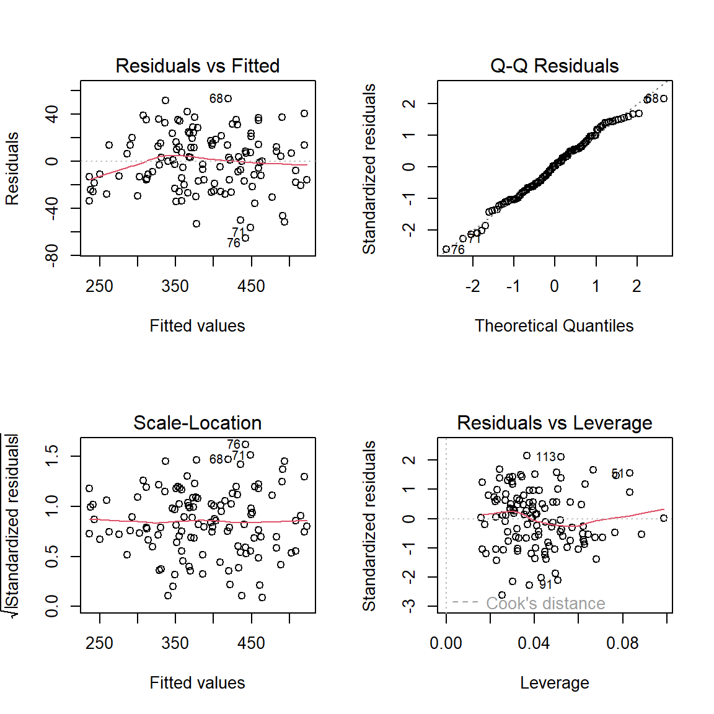
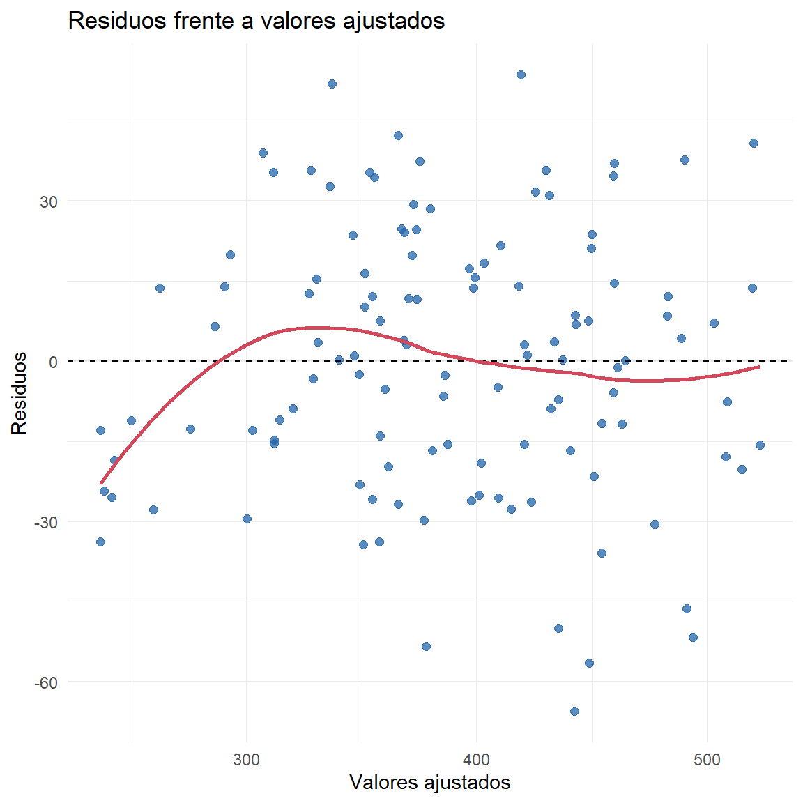
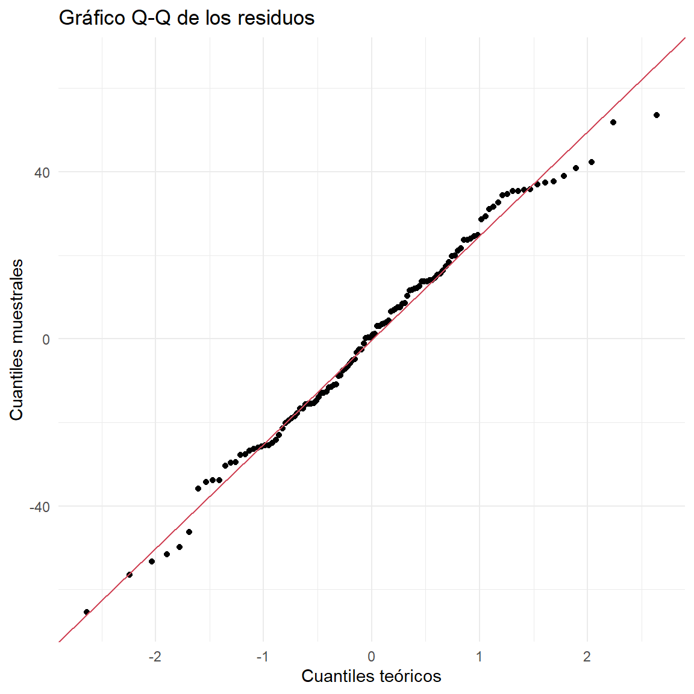
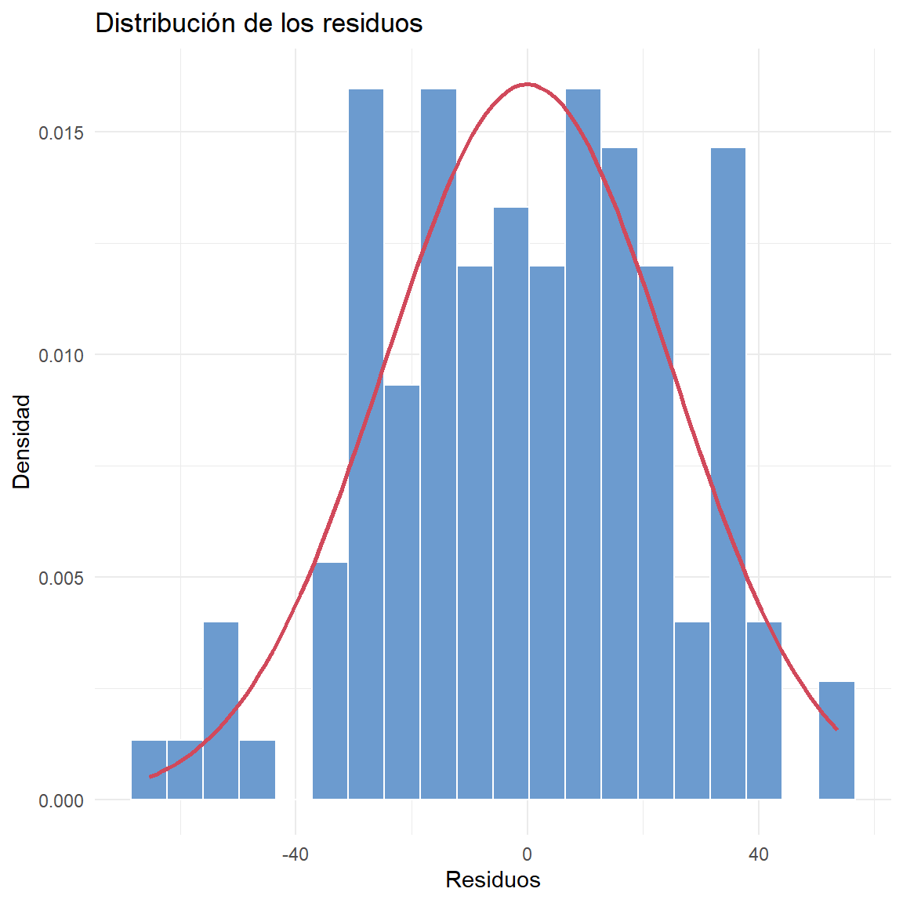
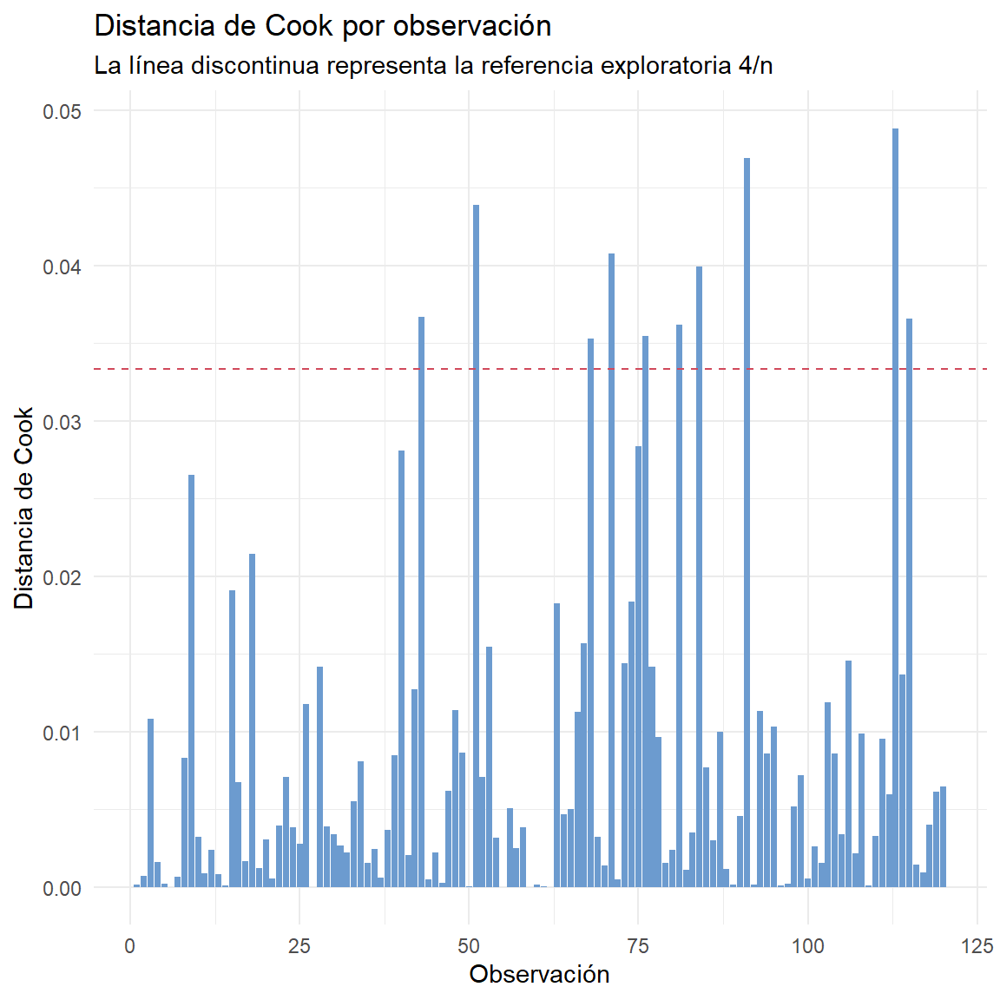

La regresión lineal múltiple es una técnica estadística que permite estudiar la relación entre una variable respuesta cuantitativa y dos o más variables explicativas. Además de estimar la asociación entre las variables, el modelo permite realizar predicciones y evaluar cuánto aporta cada predictor, manteniendo constantes los demás.
En este material se estudia la formulación del modelo, la interpretación de sus coeficientes, la estimación por mínimos cuadrados ordinarios y la validación de los principales supuestos. Se utiliza un ejemplo simulado en el contexto de la administración pública y, al final, se propone un ejercicio para los estudiantes.
Nota
Resultados de aprendizaje
Al finalizar, el estudiante podrá:
Explicar el propósito y la estructura de un modelo de regresión lineal múltiple.
Estimar un modelo en R e interpretar sus coeficientes, pruebas de significancia y medidas de ajuste.
Examinar los supuestos mediante gráficos y pruebas estadísticas.
Identificar problemas de multicolinealidad y observaciones influyentes.
Comunicar los resultados con criterio estadístico, sin confundir asociación con causalidad.
3 .Conceptos fundamentales
3.1 .¿Qué es la regresión lineal múltiple?
Es un método que modela el valor esperado de una variable cuantitativa Y en función de k variables explicativas X_1, X_2, \ldots, X_k.
Por ejemplo, una entidad pública puede estudiar si el número mensual de trámites atendidos se relaciona con las horas de capacitación del personal, los años de experiencia y el nivel de implementación tecnológica.
La regresión es múltiple porque incorpora más de una variable explicativa. Se diferencia de la regresión lineal simple, que utiliza un solo predictor.
Y_i: valor de la variable respuesta para la observación i.
\beta_0: intercepto o valor esperado de Y cuando todos los predictores valen cero.
\beta_j: cambio esperado en Y asociado con un aumento de una unidad en X_j, manteniendo constantes los demás predictores.
X_{ji}: valor del predictor j para la observación i.
\varepsilon_i: término de error aleatorio.
Una vez estimado el modelo, se obtiene:
\widehat{Y}_i=b_0+b_1X_{1i}+\cdots+b_kX_{ki}
El residuo de cada observación es:
e_i=Y_i-\widehat{Y}_i
3.3 .Interpretación de los coeficientes
Supóngase que se estima el modelo:
\widehat{Y}=120+3.5X_1+2.1X_2+8.0X_3
Si Y representa trámites atendidos por mes, X_1 horas de capacitación, X_2 años de experiencia y X_3 un índice tecnológico, entonces:
Intercepto (120): número esperado de trámites cuando los tres predictores son cero. Su interpretación práctica depende de si ese escenario tiene sentido.
Capacitación (3.5): por cada hora adicional de capacitación, se esperan 3.5 trámites adicionales al mes, manteniendo constantes experiencia e índice tecnológico.
Experiencia (2.1): por cada año adicional de experiencia, se esperan 2.1 trámites adicionales al mes, manteniendo constantes los otros predictores.
Índice tecnológico (8.0): por cada unidad adicional del índice, se esperan 8 trámites adicionales al mes, manteniendo constantes los demás predictores.
La interpretación de cada coeficiente es condicional: compara observaciones con iguales valores en los demás predictores.
3.4 .Estimación por mínimos cuadrados ordinarios
El método de mínimos cuadrados ordinarios (MCO) selecciona los coeficientes que minimizan la suma de los cuadrados de los residuos:
SCE=\sum_{i=1}^{n}(Y_i-\widehat{Y}_i)^2
En notación matricial:
\widehat{\boldsymbol{\beta}}=(X'X)^{-1}X'Y
siempre que la matriz X'X sea invertible. La multicolinealidad perfecta impide obtener una solución única por esta expresión.
3.5 .¿Cómo se evalúa el modelo?
R^2: proporción de la variabilidad observada de Y explicada por el conjunto de predictores en la muestra.
R^2 ajustado: ajusta el R^2 teniendo en cuenta el número de predictores y el tamaño de muestra; resulta útil al comparar modelos con diferente número de variables.
Prueba F global: contrasta si todos los coeficientes de pendiente son simultáneamente cero.
Pruebas t individuales: evalúan si cada coeficiente de pendiente es diferente de cero, condicionado a los demás predictores.
Error estándar residual: resume el tamaño típico de los residuos en las unidades de Y.
Un R^2 alto no demuestra que el modelo sea correcto ni que exista causalidad. La evaluación debe incluir teoría, calidad de los datos, diagnóstico de residuos y validación del modelo.
4 .Supuestos y diagnóstico del modelo
Los supuestos se refieren principalmente al comportamiento del error del modelo y a la especificación de la relación. No todos se verifican con una sola prueba. Se recomienda combinar gráficos, pruebas estadísticas y conocimiento del contexto.
4.1 .Linealidad y especificación adecuada
Se supone que la media condicional de Y puede representarse adecuadamente mediante una combinación lineal de los predictores incluidos. La linealidad se refiere a los parámetros; pueden incorporarse transformaciones o términos polinómicos si la teoría y los gráficos lo justifican.
Diagnóstico: gráfico de residuos frente a valores ajustados y gráficos de residuos frente a cada predictor. Se espera una nube sin patrones sistemáticos. Curvaturas pueden indicar relaciones no lineales o variables omitidas.
4.2 .Independencia de los errores
Los errores de distintas observaciones no deben presentar dependencia relevante. Es especialmente importante cuando los datos están ordenados en el tiempo, por ejemplo, mediciones mensuales de una misma entidad.
Diagnóstico: revisar cómo se recolectaron los datos y, cuando el orden tenga significado temporal, examinar residuos según el tiempo y utilizar una prueba apropiada, como Durbin-Watson para autocorrelación de primer orden en determinados modelos.
Advertencia
La prueba Durbin-Watson no debe interpretarse mecánicamente en datos transversales cuyo orden de filas es arbitrario. La independencia también depende del diseño de muestreo y de la estructura de los datos.
4.3 .Homoscedasticidad
Se supone que la varianza del error condicional a los predictores es constante:
Var(\varepsilon_i\mid X)=\sigma^2
Cuando la dispersión de los errores cambia según el nivel ajustado o los predictores, existe heteroscedasticidad.
Diagnóstico gráfico: residuos frente a valores ajustados. Una forma de embudo puede sugerir varianza no constante.
Prueba: Breusch-Pagan. Sus hipótesis son:
H_0: varianza constante (homoscedasticidad).
H_1: varianza no constante (heteroscedasticidad).
Con un nivel de significancia de 0.05, un valor p menor que 0.05 aporta evidencia contra la homoscedasticidad. Un valor p mayor o igual que 0.05 significa que no se rechaza H_0; no demuestra que el supuesto sea verdadero.
4.4 .Normalidad de los errores
Para la inferencia clásica exacta en muestras pequeñas se suele asumir que los errores condicionales son normales:
\varepsilon_i\mid X \sim N(0,\sigma^2)
La normalidad se refiere a los errores no observables; en la práctica se examinan los residuos como aproximación.
Diagnóstico: gráfico Q-Q e histograma de residuos.
Prueba: Shapiro-Wilk.
H_0: los residuos son compatibles con una distribución normal.
H_1: los residuos no son compatibles con una distribución normal.
Un valor p pequeño indica evidencia contra la normalidad. La prueba puede detectar desviaciones pequeñas en muestras grandes y tener poca potencia en muestras pequeñas. Por eso debe interpretarse junto con el Q-Q plot y el tamaño de muestra.
La normalidad no es requisito para que los estimadores MCO sean insesgados bajo los demás supuestos pertinentes; es principalmente relevante para la inferencia exacta en muestras pequeñas.
4.5 .Ausencia de multicolinealidad severa
Los predictores no deben presentar relaciones lineales exactas y es deseable que no exista multicolinealidad severa. Cuando los predictores están muy correlacionados, los errores estándar pueden aumentar y los coeficientes individuales volverse inestables.
Diagnóstico: matriz de correlaciones entre predictores y factor de inflación de la varianza (VIF).
Como reglas orientativas, VIF por encima de 5 puede motivar revisión y por encima de 10 suele considerarse una señal más preocupante. No son límites universales: deben valorarse según el propósito, la teoría y la estructura de los datos.
4.6 .Valores atípicos y observaciones influyentes
Una observación puede tener un residuo grande, alto apalancamiento o una influencia importante sobre los coeficientes.
Residuo estudentizado: ayuda a identificar observaciones con respuestas inusuales respecto del modelo.
Apalancamiento (leverage): mide qué tan extrema es la combinación de predictores.
Distancia de Cook: resume cuánto cambiaría el ajuste al retirar una observación.
La referencia 4/n para distancia de Cook es una regla exploratoria, no un criterio automático para eliminar datos. Toda observación señalada debe revisarse por posibles errores, características legítimas o problemas de especificación.
4.7 .Resumen de los diagnósticos
Supuesto o aspecto
Herramienta
Señal de alerta
Linealidad
Residuos vs. ajustados y predictores
Curvatura o patrón sistemático
Independencia
Diseño, orden temporal, Durbin-Watson cuando proceda
Dependencia o autocorrelación
Homoscedasticidad
Residuos vs. ajustados, Breusch-Pagan
Embudo o evidencia de varianza no constante
Normalidad de residuos
Q-Q plot, histograma, Shapiro-Wilk
Desviaciones marcadas de la diagonal
Multicolinealidad
Correlaciones y VIF
VIF elevados o predictores redundantes
Influencia
Residuos, leverage y Cook
Casos que afectan sustancialmente el ajuste
5 .Ejemplo aplicado: desempeño de una oficina pública
5.1 .Situación problema
Una alcaldía desea estudiar los factores asociados con el número de trámites atendidos mensualmente por sus oficinas. Para ilustrar el procedimiento se construirá una base simulada de 120 oficinas. Se consideran cuatro variables:
Variable
Descripción
Unidad
tramites
Trámites atendidos al mes (respuesta)
Número de trámites
capacitacion
Horas de capacitación del personal
Horas
experiencia
Experiencia promedio del personal
Años
tecnologia
Índice de implementación tecnológica
Escala 0–10
personal
Número de funcionarios asignados
Personas
La pregunta de investigación es: ¿en qué medida las horas de capacitación, la experiencia del personal, la implementación tecnológica y el número de funcionarios se relacionan con la cantidad mensual de trámites atendidos?
5.2 .Preparación de datos y estimación
Ver código
# Instalar una sola vez si los paquetes no están disponibles:# install.packages(c("tidyverse", "car", "lmtest", "broom"))library(tidyverse)library(car)library(lmtest)library(broom)set.seed(2026)n <-120Data <-tibble(capacitacion =runif(n, 2, 20),experiencia =runif(n, 1, 18),tecnologia =runif(n, 1, 10),personal =sample(5:20, n, replace =TRUE)) %>%mutate(tramites =75+5.2* capacitacion +2.8* experiencia +11.5* tecnologia +13.0* personal +rnorm(n, mean =0, sd =28) )glimpse(Data)
capacitacion experiencia tecnologia personal
Min. : 2.022 Min. : 1.071 Min. :1.250 Min. : 5.00
1st Qu.: 5.674 1st Qu.: 3.475 1st Qu.:3.848 1st Qu.: 9.00
Median : 9.873 Median : 8.075 Median :6.316 Median :13.00
Mean :10.385 Mean : 8.625 Mean :5.880 Mean :12.78
3rd Qu.:14.896 3rd Qu.:12.992 3rd Qu.:7.739 3rd Qu.:16.25
Max. :19.596 Max. :17.866 Max. :9.963 Max. :20.00
tramites
Min. :202.7
1st Qu.:345.2
Median :388.8
Mean :388.3
3rd Qu.:442.2
Max. :560.8
La base es simulada con fines pedagógicos. Los resultados numéricos pueden variar si se modifica la semilla o el mecanismo de simulación.
La significancia estadística no sustituye la interpretación sustantiva. Un coeficiente puede ser estadísticamente significativo y tener poca importancia práctica, o viceversa.
5.4 .Predicción para una oficina
Se construye un escenario ilustrativo con 10 horas de capacitación, 8 años de experiencia, índice tecnológico de 7 y 12 funcionarios:
El intervalo de predicción representa un rango para una observación individual bajo el modelo. Es más amplio que el intervalo de confianza para la media condicional.
6 .Validación de los supuestos en R
6.1 .Diagnóstico gráfico general
Ver código
par(mfrow =c(2, 2))plot(modelo)

Ver código
par(mfrow =c(1, 1))
Los cuatro gráficos estándar de plot.lm() permiten revisar, entre otros aspectos, residuos frente a ajustados, normalidad aproximada, escala-localización y observaciones con influencia.
6.2 .Linealidad y homoscedasticidad: residuos frente a ajustados
Ver código
diagnostico <-tibble(ajustados =fitted(modelo),residuos =residuals(modelo))ggplot(diagnostico, aes(x = ajustados, y = residuos)) +geom_point(color ="#2364AA", alpha =0.75, size =2) +geom_hline(yintercept =0, linetype ="dashed") +geom_smooth(method ="loess", se =FALSE, color ="#D1495B") +labs(title ="Residuos frente a valores ajustados",x ="Valores ajustados",y ="Residuos" ) +theme_minimal()

Interpretación: se espera una nube de puntos sin curvatura clara y con dispersión aproximadamente constante. Un patrón curvo puede indicar falta de linealidad; una dispersión creciente o decreciente puede sugerir heteroscedasticidad.
6.3 .Normalidad: Q-Q plot e histograma
Ver código
ggplot(tibble(residuos =residuals(modelo)),aes(sample = residuos)) +stat_qq() +stat_qq_line(color ="#D1495B") +labs(title ="Gráfico Q-Q de los residuos",x ="Cuantiles teóricos",y ="Cuantiles muestrales" ) +theme_minimal()

Ver código
ggplot(tibble(residuos =residuals(modelo)),aes(x = residuos)) +geom_histogram(aes(y =after_stat(density)),bins =20, fill ="#6C9BCF",color ="white") +stat_function(fun = dnorm,args =list(mean =mean(residuals(modelo)),sd =sd(residuals(modelo)) ),color ="#D1495B",linewidth =1 ) +labs(title ="Distribución de los residuos",x ="Residuos",y ="Densidad" ) +theme_minimal()

Prueba de Shapiro-Wilk:
Ver código
shapiro.test(residuals(modelo))
Shapiro-Wilk normality test
data: residuals(modelo)
W = 0.98851, p-value = 0.4111
Decisión: si el valor p es menor que 0.05, se rechaza la hipótesis de normalidad. Si es igual o mayor que 0.05, no se rechaza. La conclusión debe contrastarse con los gráficos.
6.4 .Homoscedasticidad: prueba de Breusch-Pagan
Ver código
lmtest::bptest(modelo)
studentized Breusch-Pagan test
data: modelo
BP = 3.537, df = 4, p-value = 0.4723
H_0: homoscedasticidad.
H_1: heteroscedasticidad.
Si el valor p es menor que 0.05, existe evidencia estadística de heteroscedasticidad. Si no, no se rechaza la hipótesis nula.
Si se detecta heteroscedasticidad, se puede considerar el uso de errores estándar robustos para la inferencia, revisar la especificación, evaluar transformaciones justificadas o modelar la varianza. No se debe cambiar el modelo únicamente para obtener un valor p superior a 0.05.
Ejemplo de errores estándar robustos tipo HC3:
Ver código
# Instalar si es necesario:# install.packages("sandwich")library(sandwich)lmtest::coeftest(modelo, vcov. = sandwich::vcovHC(modelo, type ="HC3"))
t test of coefficients:
Estimate Std. Error t value Pr(>|t|)
(Intercept) 81.11341 10.79453 7.5143 1.348e-11 ***
capacitacion 4.95811 0.45815 10.8220 < 2.2e-16 ***
experiencia 3.27249 0.45376 7.2119 6.284e-11 ***
tecnologia 12.04362 1.04174 11.5611 < 2.2e-16 ***
personal 12.25230 0.48299 25.3676 < 2.2e-16 ***
---
Signif. codes: 0 '***' 0.001 '**' 0.01 '*' 0.05 '.' 0.1 ' ' 1
6.5 .Independencia: Durbin-Watson cuando corresponda
Ver código
lmtest::dwtest(modelo)
Durbin-Watson test
data: modelo
DW = 1.9075, p-value = 0.3064
alternative hypothesis: true autocorrelation is greater than 0
H_0: no existe autocorrelación de primer orden.
H_1: existe autocorrelación de primer orden.
La prueba tiene sentido cuando las observaciones poseen un orden temporal o secuencial justificable. En esta base simulada de oficinas, el orden de las filas es arbitrario; por tanto, no debe extraerse una conclusión sustantiva de Durbin-Watson. En datos temporales, se debe conservar el orden cronológico y estudiar la estructura de los residuos.
6.6 .Multicolinealidad: factor VIF
Ver código
car::vif(modelo)
capacitacion experiencia tecnologia personal
1.016483 1.033873 1.025162 1.008924
Como guía exploratoria, VIF mayores que 5 ameritan revisión y valores mayores que 10 pueden indicar multicolinealidad severa. Estos umbrales no son leyes universales.
También puede examinarse la correlación entre los predictores:
Ver código
Data %>%select(capacitacion, experiencia, tecnologia, personal) %>%cor()
Una correlación alta entre dos predictores no demuestra por sí sola que el modelo sea inadecuado; se debe evaluar el VIF, el propósito del análisis y el conocimiento del fenómeno.
6.7 .Observaciones influyentes: distancia de Cook
Ver código
cook <-cooks.distance(modelo)influencia <-tibble(observacion =seq_along(cook),cooks_distance = cook)ggplot(influencia,aes(x = observacion, y = cooks_distance)) +geom_col(fill ="#6C9BCF") +geom_hline(yintercept =4/nrow(Data),linetype ="dashed",color ="#D1495B" ) +labs(title ="Distancia de Cook por observación",subtitle ="La línea discontinua representa la referencia exploratoria 4/n",x ="Observación",y ="Distancia de Cook" ) +theme_minimal()

Identificar los casos con mayor distancia de Cook:
Una observación influyente no debe eliminarse automáticamente. Primero se debe verificar si existe un error de digitación, una condición especial o una característica legítima de la población. También conviene comparar el modelo con y sin el caso, justificando cualquier decisión.
6.8 .Tabla resumen de pruebas
El siguiente código reúne las pruebas principales. Recuerde que Durbin-Watson solo se interpreta si el orden de las observaciones tiene sentido.
Ver código
bp <- lmtest::bptest(modelo)sw <-shapiro.test(residuals(modelo))dw <- lmtest::dwtest(modelo)resultados_pruebas <-tibble(Prueba =c("Breusch-Pagan", "Shapiro-Wilk", "Durbin-Watson"),Estadistico =c(unname(bp$statistic),unname(sw$statistic),unname(dw$statistic) ),Valor_p =c(bp$p.value, sw$p.value, dw$p.value),Hipotesis_nula =c("Varianza constante","Residuos compatibles con normalidad","Sin autocorrelación de primer orden" )) %>%mutate(Decision_05 =if_else( Valor_p <0.05,"Rechazar H0","No rechazar H0" ) )resultados_pruebas
# A tibble: 3 × 5
Prueba Estadistico Valor_p Hipotesis_nula Decision_05
<chr> <dbl> <dbl> <chr> <chr>
1 Breusch-Pagan 3.54 0.472 Varianza constante No rechaza…
2 Shapiro-Wilk 0.989 0.411 Residuos compatibles con normal… No rechaza…
3 Durbin-Watson 1.91 0.306 Sin autocorrelación de primer o… No rechaza…
La tabla automatiza la decisión estadística, pero no reemplaza la interpretación contextual. En particular, la decisión de Durbin-Watson no es pertinente para este ejemplo transversal simulado.
7 .¿Qué hacer si un supuesto no se cumple?
Hallazgo
Posibles acciones
No linealidad
Revisar gráficos, transformar variables o incluir términos no lineales con justificación
Heteroscedasticidad
Considerar errores estándar robustos, transformación o modelado de varianza
Autocorrelación
Revisar estructura temporal, especificación y métodos para series de tiempo
Residuos no normales
Revisar valores extremos, especificación y tamaño muestral; considerar métodos robustos cuando proceda
Multicolinealidad
Revisar variables redundantes, justificar selección o ampliar información
Observaciones influyentes
Verificar datos, documentar casos y realizar análisis de sensibilidad
Importante
No existe una prueba única que certifique que un modelo es correcto. La validación es un proceso de diagnóstico y razonamiento. Tampoco se deben eliminar variables u observaciones solo para conseguir resultados estadísticamente significativos.
8 .Ejercicio propuesto para los estudiantes
8.1 .Contexto: gestión de servicios en una alcaldía
Una alcaldía desea analizar los factores relacionados con la satisfacción de los ciudadanos con la atención recibida. Se dispone de información de 80 jornadas de atención. La variable respuesta es el puntaje promedio de satisfacción, en una escala de 0 a 100. Se consideran como posibles predictores el tiempo promedio de espera, el número de funcionarios disponibles, las horas de capacitación del equipo y el porcentaje de trámites digitalizados.
El docente puede proporcionar el archivo ejercicio_regresion_multiple.csv o los estudiantes pueden crear una base simulada con el código siguiente:
¿Por qué el coeficiente de espera podría ser negativo?
¿Qué significa comparar el efecto de una variable manteniendo constantes las demás?
¿Qué consecuencias tendría utilizar el modelo para tomar decisiones si existe heteroscedasticidad?
¿Por qué no es correcto afirmar que la capacitación causa mayor satisfacción únicamente porque su coeficiente resulte significativo?
¿Qué información adicional necesitaría la alcaldía para fortalecer el análisis?
9 .Lista de verificación para el informe
Antes de entregar el trabajo, compruebe que el informe incluya:
10 .Glosario
Variable dependiente o respuesta: variable cuantitativa que se desea explicar o predecir.
Variable independiente o predictora: variable utilizada para explicar o predecir la respuesta.
Coeficiente: cantidad que representa el cambio esperado en la respuesta por unidad de un predictor, manteniendo constantes los demás.
Residuo: diferencia entre el valor observado y el valor estimado.
Homoscedasticidad: constancia de la varianza condicional de los errores.
Multicolinealidad: asociación lineal entre dos o más variables explicativas.
Apalancamiento: grado en que una observación presenta una combinación inusual de predictores.
Distancia de Cook: medida de la influencia de una observación sobre el ajuste del modelo.
11 9. Bibliografía básica
Field, A. (2013). Discovering statistics using IBM SPSS Statistics (4th ed.). SAGE.
James, G., Witten, D., Hastie, T., Tibshirani, R., & Taylor, J. (2023). An introduction to statistical learning: With applications in Python. Springer. https://www.statlearning.com/
Montgomery, D. C., Peck, E. A., & Vining, G. G. (2021). Introduction to linear regression analysis (6th ed.). Wiley.
Wooldridge, J. M. (2020). Introductory econometrics: A modern approach (7th ed.). Cengage.
Nota docente: el conjunto de datos del ejemplo y el del ejercicio se generan mediante simulación. No representan registros reales de una entidad pública. Para un análisis aplicado, sustituya esos datos por una base documentada, revise su calidad y describa el diseño de recolección.